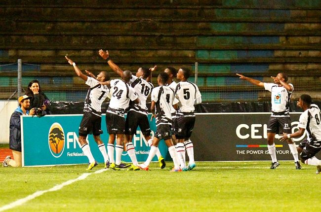
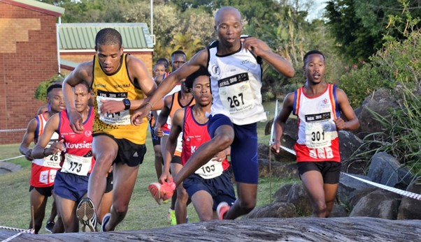
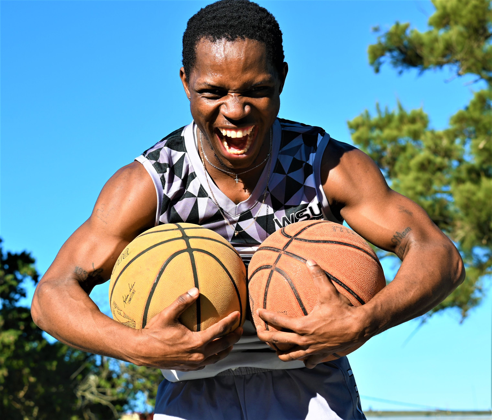
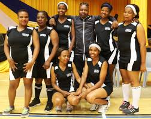
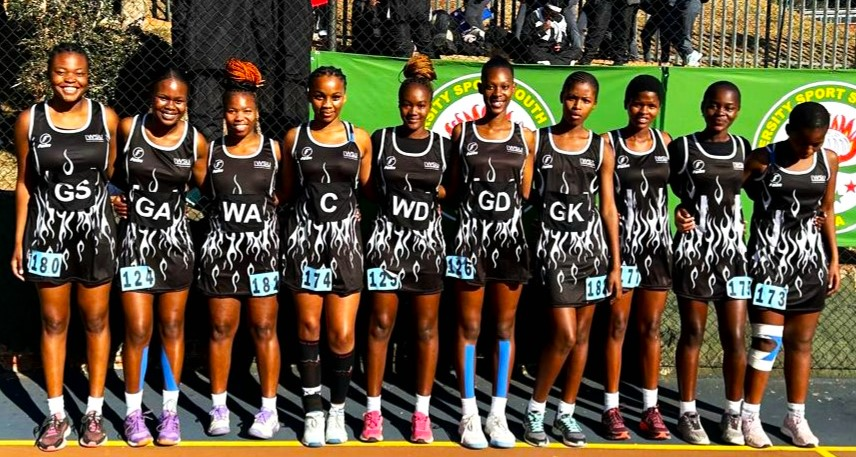

Welcome to the Walter Sisulu University Sports Hub!
Whether you’re a passionate athlete, a curious newcomer, or a supporter of WSU’s vibrant sports culture,
this platform connects you to everything sports-related at our institution.
Purpose of This Website
The site improves communication between students and the Sports Department. Here, you can:
Stay updated on training sessions, announcements, and match schedules
Register for different sports and events
Find coach and coordinator contact details
Access results, schedules, and resources
Send feedback or questions to the sports team
Together let’s build a stronger and more connected WSU sports community! 🏆
⚽ Football

Football is one of the most active sports on campus. With dedicated coaches and weekly training sessions, students get the chance to improve their skills and compete in inter-university leagues and tournaments. The football program helps students build endurance, teamwork, and discipline while also having fun. click here to join the club.
🏉 Rugby
Rugby is for those who enjoy physical challenge and strategic gameplay. It teaches strength, cooperation, and resilience. Our rugby team participates in regular matches and tournaments, and welcomes both experienced players and those new to the sport. click here to join the team.
🏏 Cricket
Cricket is a popular sport that brings together tactical thinking and precision. Whether you're a batsman, bowler, or an all-rounder, you'll find opportunities to compete in friendly matches and varsity leagues. Coaching and practice nets are provided for skill development. click here to join the team.
🏃 Athletics

Athletics includes a variety of track and field events, such as sprinting, long-distance running, high jump, and more. It's ideal for students who are goal-oriented and self-motivated. Our athletics program also helps prepare students for regional and national competitions. click here to join the team.
🏀 Basketball

Basketball is a high-energy, fast-paced game that teaches teamwork, coordination, and decision-making under pressure. Students can join male or female teams and participate in campus leagues, inter-university games, and casual matches. click here to join the team.
🏐 Volleyball

Volleyball is one of the fast-growing sports at Walter Sisulu University, bringing together students who value teamwork, agility, and strategy. The sport encourages both competitive and recreational play, allowing students of all skill levels to participate and improve. click here to join the team.
🏐 Netball

Netball is especially popular among female students, but open to everyone interested. The sport emphasizes quick reflexes, positioning, and communication. Our netball team competes at different levels and welcomes new players every semester. click here to join the team.
.jpeg)
.jpeg)